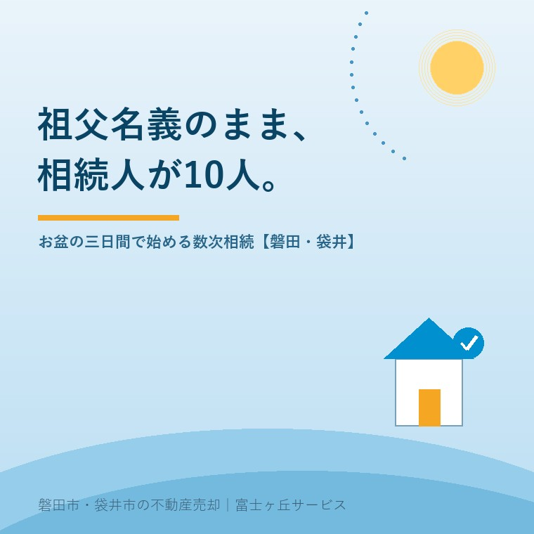

2026年8月13日｜カテゴリ：相続・しまい方／売却実務

この記事の要点
Q. 実家の名義を調べたら、亡くなった祖父のままでした。司法書士さんに「相続人は10人います」と言われて頭が真っ白です。お盆にいとこも集まるのですが、この三日間で何をすればいいですか。
A. 三日間でやるのは「決めること」ではなく、「名前と住所を確定させること」です。数次相続で人数が増えるのは、祖父が亡くなったあとに相続人が次々と亡くなり、その方の相続人（配偶者を含む）がまるごと入れ替わりで加わるからです。人数は時間とともに増える一方なので、今日が最も少ない日だと考えてください。この三日間では、①誰が相続人かを紙に書き出す ②連絡先（住所・電話）を全員分そろえる ③次に集まる日を決める──の3つで十分です。期限は2つあり、相続登記の義務化（令和6年4月1日施行・3年以内・10万円以下の過料）は、施行日前の相続について令和9年（2027年）3月31日まで。もうひとつが遺産分割の10年ルール（民法904条の3・令和5年4月1日施行）です。磐田市・袋井市では、介護施設の運営から不動産事業を始めた富士ヶ丘サービスのような「介護×不動産」専門の会社に相談するという選択肢があります。
今日は8月13日、迎え盆です。磐田市見付の事務所の前を、朝から花を抱えた車が通っていきます。
この時期、当社にいちばん多く寄せられるご相談が、これです。
「実家の名義が、じいさんのままでした」。
そして、司法書士に戸籍を取ってもらった方が、次の言葉を口にされます。「相続人が10人いると言われました」。
驚かれますが、これは特別な話ではありません。磐田市・袋井市の旧集落や、昭和に分譲された住宅地で、私たちが月に何度も見ている光景です。そして、お盆の三日間は、その10人が一年でいちばん近い場所にいる時間でもあります。
まず、人数が増える仕組みを押さえてください。ここを理解すると、慌てる必要がないことも、急ぐべき理由も、両方わかります。
祖父が亡くなった時点では、相続人は祖母と子（父ときょうだい）だけです。仮に子が3人なら、祖母を含めて4人。この段階で登記していれば、話は簡単でした。
ところが、登記をしないまま時間が経ちます。その間に祖母が亡くなり、父が亡くなり、伯父が亡くなる。亡くなった相続人が持っていた「相続する権利」は消えるのではなく、その方の相続人へ引き継がれます。これが数次相続です。
| 時点 | 祖父の相続について協議に加わる人 | 人数 |
|---|---|---|
| 祖父が亡くなった直後 | 祖母／長男（伯父）／二男（父）／長女（叔母） | 4人 |
| 祖母が亡くなった後 | 伯父／父／叔母 | 3人 |
| 伯父が亡くなった後 | 父／叔母／伯父の妻＋伯父の子2人 | 5人 |
| 父も亡くなった後 | 叔母／伯父の妻＋子2人／母＋自分＋弟 | 7人 |
| 叔母も亡くなった後 | 上記＋叔母の夫＋子2人（叔母の分が入れ替わる） | 9〜10人 |
ご覧のとおり、1人が亡くなるたびに、その方の家族が「まるごと」入ってきます。とくに大きいのが配偶者です。伯父の妻、叔母の夫。血のつながりのない方が、実家の権利について印鑑を押す立場になります。これは責められる話ではまったくなく、法律がそう定めているというだけのことです。
混同されやすいので整理します。分かれ目は「祖父より先に亡くなったか、後に亡くなったか」です。
| 代襲相続 | 数次相続 | |
|---|---|---|
| いつ亡くなった | 祖父より先に子が死亡 | 祖父の後に子が死亡 |
| 誰が入るか | 孫（子の子）だけ | 子の相続人全員＝配偶者も入る |
| 人数への影響 | 比較的増えにくい | 世代ごとに大きく増える |
順番が1日違うだけで、協議に加わる顔ぶれが変わります。だから司法書士は、除籍謄本の死亡日を1日単位で確認します。ご家族の記憶ではなく、戸籍で確定させる作業です。
ここが本題です。集まった三日間で遺産分割をまとめようとすると、たいてい失敗します。誰かが黙って帰り、翌年から来なくなる。これが最悪の結末です。
この三日間の目標は、「合意」ではなく「名簿」です。
正式な確定は戸籍で行いますが、その前にご家族の記憶で家系図を書くことに大きな意味があります。「そういえば、伯父さんには先妻との間に子がいたはずだ」。この一言が出てくるのは、年配の親族が同席しているお盆だけです。
紙に書くのは、この4つ。氏名／続柄／生年（分かれば）／亡くなっているなら死亡年。それだけで、司法書士の戸籍収集は驚くほど速くなります。
実務でいちばん時間を食うのは、法律ではなく「連絡がつかない」ことです。遺産分割協議書は、相続人全員の署名と実印、そして印鑑証明書が必要です。1人でも欠けると成立しません。
今日、目の前にいる方の住所・携帯番号・メール（またはLINE）をその場で控えてください。「あとで送るね」は、9割届きません。
お盆を逃すと、次に全員が揃うのは翌年の盆か、誰かの葬儀です。年末年始でも、Web会議でも構いません。日付を1つ決めてから解散する。これだけで、話が止まる確率が大きく下がります。
この三日間の使い方は、お盆の帰省が、実家を守る第一歩｜家族会議の準備リストにも詳しく書きました。隣家が揃ううちに済ませたい仕事についてはお盆の三日間でしかできない仕事──境界立会いと筆界確認書をご覧ください。
三日間で言ってはいけない言葉：「実家は誰が継ぐ？」
この問いは、その場を必ず固くします。この段階では「まず、誰に印鑑をお願いすることになるのかを確かめたい」という言い方に置き換えてください。分け方の話は、名簿と評価額がそろってからで十分に間に合います。
数次相続の登記には、費用と手間を左右する分かれ目があります。中間省略登記（数次相続による中間の登記の省略）です。
原則は、亡くなった順に、相続登記を積み重ねること。祖父→父→自分、なら2件です。
ただし例外があります。登記先例（昭和30年12月16日民事甲第2670号民事局長回答など）により、中間の相続が「単独相続」だった場合に限り、中間の登記を省略して、祖父から最終取得者へ1件で移すことが認められています。
| 中間の相続の状態 | 1件でできるか |
|---|---|
| 中間の相続人がもともと1人だけ | できる |
| 他の相続人が全員相続放棄して1人になった | できる |
| 遺産分割協議の結果、中間で1人が単独取得した | できる |
| 中間が複数人の共有のまま | できない（順に登記が必要） |
ここに、10人でまとまるための現実的な出口があります。「祖父の分は、いったん父が1人で相続したことにする」という協議が整えば、登記の件数が減り、費用も下がる。だから、話し合いの入り口は「実家を誰がもらうか」ではなく「中間をどう整理するか」なのです。
なお、実際に省略できるかどうかは戸籍と協議書の内容次第です。必ず司法書士にご確認ください。ここは自己判断が最も危険な領域です。
逆に、10人の共有名義で登記してしまうと、その先が動かなくなります。理由は実家を「きょうだい共有名義」で相続するとどうなる？に書いたとおりです。
「祖父の代の話だから、今さら急いでも」と思われるかもしれません。ところが今は、古い相続ほど期限が近いという状況になっています。
法務省の説明によれば、相続登記の申請義務化は令和6年（2024年）4月1日に施行されました。相続により不動産の所有権を取得した相続人は、自己のために相続の開始があったことを知り、かつその不動産の所有権を取得したことを知った日から3年以内に相続登記を申請する義務があります。正当な理由なく怠ると10万円以下の過料の対象です。
そして、施行日前に開始した相続も対象です。令和6年4月1日以前に相続で不動産を取得したことを知っていた場合、令和9年（2027年）3月31日までに登記しないと（正当な理由がなければ）過料の対象になります。今日から数えて、残り約1年7か月です。
どうしても3年以内にまとまらないときのために、相続人申告登記という簡易な手続きが用意されています。相続人であることを法務局に申し出るもので、相続人が単独で申し出ることができ、これにより申請義務を履行したものとみなされます。ただし持分までは登記されず、権利の移転を公示するものではありません。売却するには、結局あらためて相続登記が必要です。過料を止めるための応急処置と理解してください。期限の詳細は相続登記の期限はいつまで？にまとめています。
もうひとつが、意外と知られていない期限です。令和5年（2023年）4月1日に施行された民法904条の3により、相続開始の時から10年を経過した後の遺産分割は、原則として法定相続分（または指定相続分）によることになりました。
つまり、「長男が家業を継いで祖父の面倒を見た」（寄与分）、「二男は生前に家を建ててもらった」（特別受益）といった事情を、原則として主張できなくなります。家庭裁判所は法定相続分で分けることになります。
例外として、10年経過前に家庭裁判所へ遺産分割の請求をしていた場合などがあります。また、10年を過ぎても、相続人全員が合意すれば、法定相続分と異なる分け方をすること自体は可能です。失われるのは「主張して認めさせる力」です。
この改正は、施行日前に開始していた相続にも適用されます。その場合の期限は、相続開始から10年を経過する時か、施行時（令和5年4月1日）から5年を経過する時の、いずれか遅い時点とされています。昭和や平成の初めに始まった相続なら、後者──2028年春が事実上の区切りです。具体的な日付の数え方は事案により異なりますので、弁護士へご確認ください。
期限の数え方の根拠（民法904条の3と附則第3条）、家庭裁判所への請求にいくらかかるか、磐田市で戸籍を集めるときの落とし穴は、遺産分割の10年ルール、2028年3月末が実家の分かれ目に詳しくまとめました。
10人の相続でいちばん多い誤解──「うちは仲がいいから、期限は関係ない」。関係あります。期限が来ると、仲のよさや貢献ではなく、分数（法定相続分）が基準になるのです。「お兄さんに多く」を実現したいなら、期限内に紙にする必要があります。
「10人で話し合う」と考えると気が遠くなります。実務では、そんな会議はしません。
それから、祖父名義の場合、実家以外にも不動産が出てくることが珍しくありません。2026年2月2日に始まった制度で全国の名義を一覧化できるようになりました。所有不動産記録証明制度の使い方をご覧ください。相続人の数を数えるのと同時に、対象の数も数える。これが数次相続の鉄則です。
地元で20年近くお手伝いしてきて、つまずきどころには地域の傾向があります。
もうひとつ、地元ならではの現実を申し上げます。祖父名義のまま20年放置された家は、たいてい傷んでいます。権利の整理に1年かかる間も、雨漏りは進みます。権利の作業と、建物の手当ては、同時に走らせてください。
当社は、磐田市見付で介護施設を運営するところから不動産の仕事を始めました。ですからご相談は、たいてい「親を看取った」「施設に入れた」という場面から始まります。
数次相続のご相談で、私たちが最初にすることは、法律の説明ではありません。いらしたご家族に、鉛筆で家系図を書いていただくことです。書きながら、必ず記憶が出てきます。「そういえば、この人は再婚だった」。その一言が、あとで数万円と数か月を節約します。
登記は司法書士、税は税理士、揉めごとは弁護士。私たちの役割は、そのどこに、どの順番で持ち込むかを整理し、最後に「家をどうするか」までを一本の線でつなぐことです。目指しているのは高く売ることだけではなく、「家族が困らない売却」です。
事実の整理にはふじがおか実家カルテを、相続の全体像は相続はじめ相談室を、実家の片づけや処分は実家じまい相談室をお使いください。
相続人が10人と聞くと、絶望的に思えます。けれど10人という数字は、これ以上増やさないための締切のようなものです。来年の盆には、12人になっているかもしれません。今日、名前を紙に書くところからで大丈夫です。
ふじがおか実家カルテ｜「祖父名義のまま」でもご相談いただけます
まず、家系図の下書きを一緒に。
住所や固定資産税の納税通知書をもとに、名義・相続登記の要否・相続人の見込み人数・農地や私道の有無・売却時の段取りを整理し、次に何を誰へ持ち込むかを1枚にしてお出しします。作成料0円・入力約1分。申込みだけで売却依頼にはなりません。
本記事は2026年8月13日時点で法務省・法務局・裁判所が公表している情報に基づく一般的な解説であり、個別の相続の結論を保証するものではありません。相続人の範囲・法定相続分は戸籍によって確定するものであり、本記事の事例（相続人10人）は説明のための一例です。数次相続における中間省略登記の可否は、中間の相続が単独相続と認められるかどうかなど個別事情により異なりますので、必ず司法書士へご確認ください。遺産分割に関する民法904条の3の期間の起算・満了日、経過措置の適用は事案により異なりますので弁護士へ、相続税の要否・申告期限は税理士へ、農地の売買・転用の許可は各市町村の農業委員会へご相談ください。相続放棄は原則として自己のために相続の開始があったことを知った時から3か月以内です。個別のご相談は当社までどうぞ。

この記事を書いた人：大石浩之（宅地建物取引士）
磐田市・袋井市で「介護×相続×空き家」に特化した不動産売却支援を行う富士ヶ丘サービスの代表取締役・宅地建物取引士。介護施設の運営から不動産事業を始めた経験をもとに、売主とご家族が困らない売却を一件ずつお手伝いしています。プロフィール
磐田市・袋井市の実家じまい・相続空き家相談
固定資産税通知書だけでも相談できます
住所があいまいでも、通知書や写真から名義・道路・農地・残置物の確認順を整理します。カルテ申込またはLINEで状況を送ってください。
富士ヶ丘サービス株式会社／静岡県磐田市見付5789番地1／TEL:0538-31-3308／静岡県知事 (2) 第14083号／代表取締役・宅地建物取引士 大石 浩之